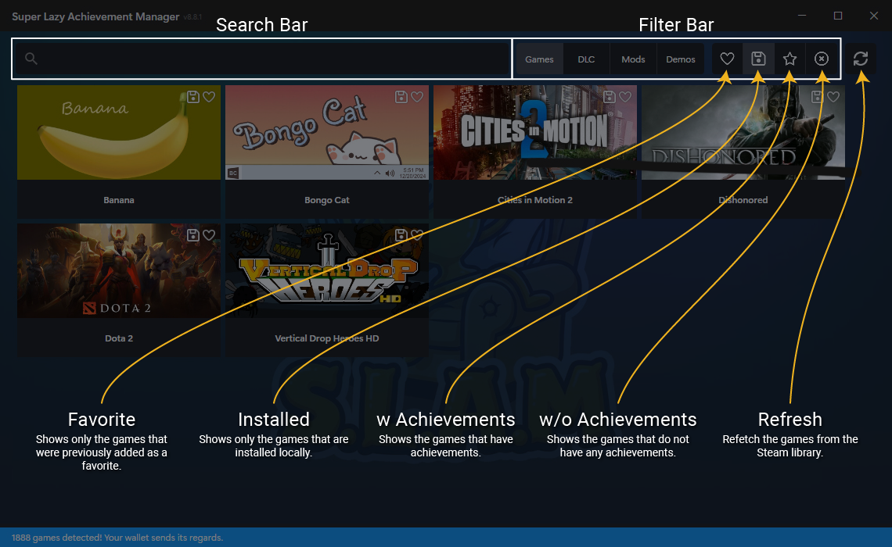

1
Getting Started

When you open SLAM, it will automatically detect your local Steam installation and load your games library. If you have a large library, this may take a few moments.
- Use the search bar at the top to quickly find specific games in your library. The search takes filters into consideration, so you might have to adjust them accordingly.
-
Use the
Filter Bar
at the top to toggle between Games, DLC, Mods, Demos. You can also filter by favorite, locally installed, with or without achievements.
- Click on any game banner to view and manage its achievements.
2
Managing Achievements
Once you've selected a game, you have full control over your progression.
-
Lock / Unlock Individually
: Click the padlock icon next to any achievement to instantly toggle its state.
-
Toggle All
: Click the "Select All" button at the top to quickly mark or unmark every achievement in the game.
-
Commit Changes
: When you're ready, simply click the
Store
button to permanently save the changes to your Steam account.
3
Using the Timer Mode
Want to make your achievement unlocks look natural? The Timer Mode unlocks achievements in the background over time.
-
Click the
Exact Time Generator
button (the clock icon with a gear) in the bottom right corner.
-
Set your desired
Total Time
(e.g., 12 hours) that you want the unlocks to span across.
-
Select your
Time Difference
preference (Small, Medium, Large) to control how spaced out the unlocks will be.
-
Click
Generate
to assign a calculated countdown timer to every locked achievement.
-
Hit
Start Timer
. SLAM will run silently in the background and unlock each achievement exactly when its timer hits zero!
4
Troubleshooting
Running into issues? Here's what you need to know:
-
Missing Images:
If images aren't loading, ensure you are connected to the internet. SLAM caches images locally on the first fetch, so they will load instantly on subsequent launches without using bandwidth!
-
Empty Game List:
Ensure Steam is currently running in the background and that you are logged into your account.